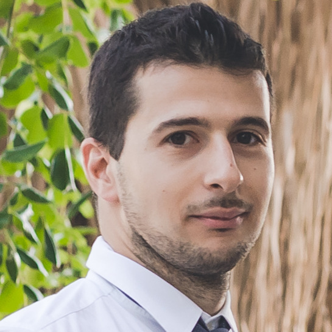
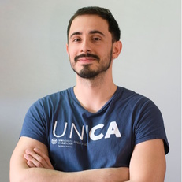
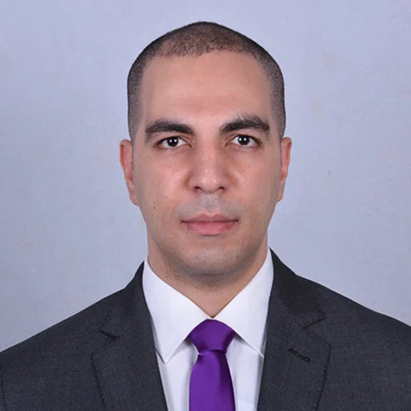
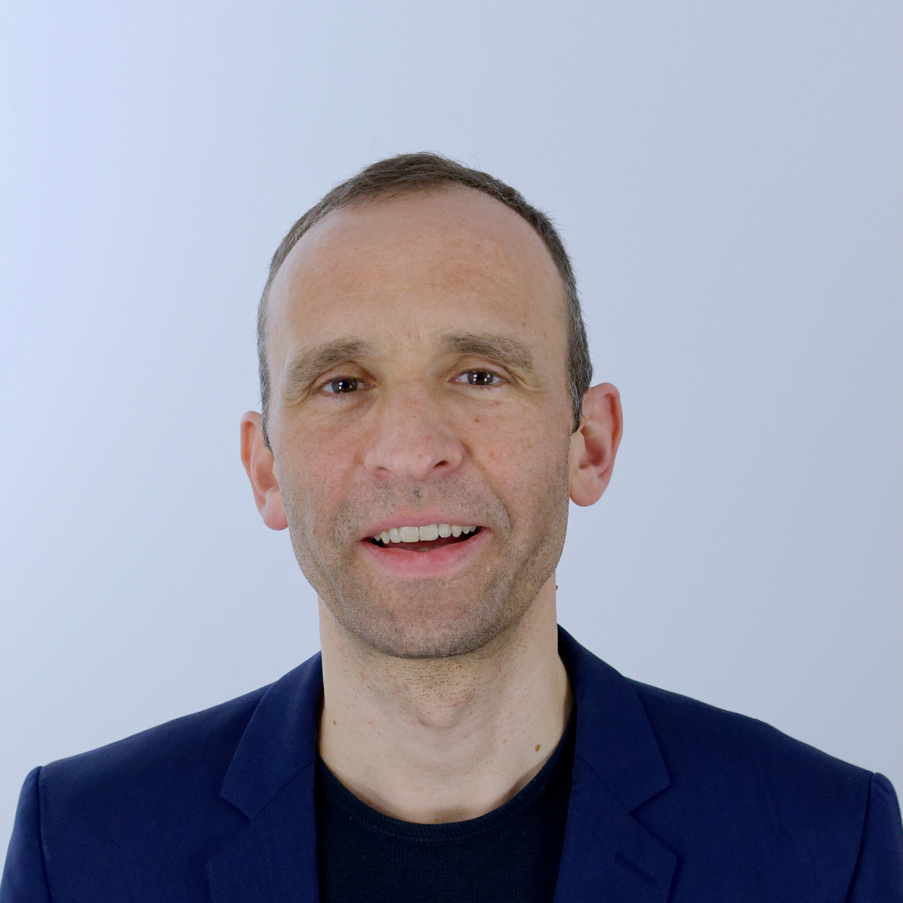
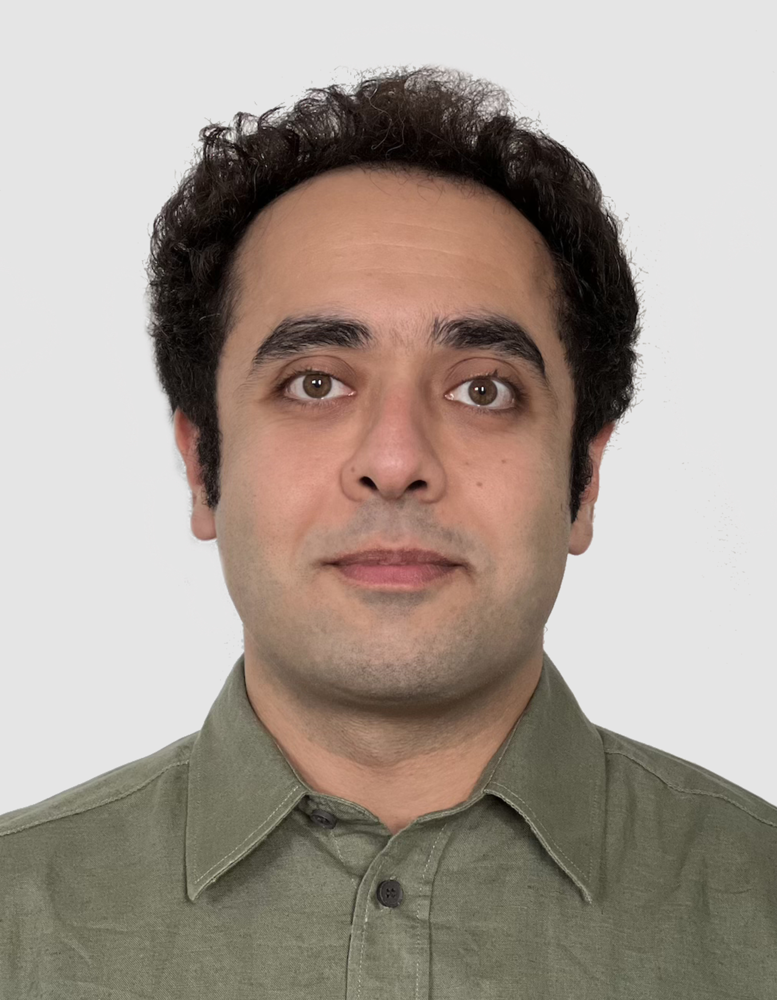
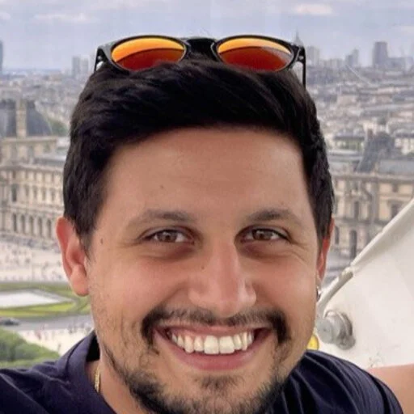
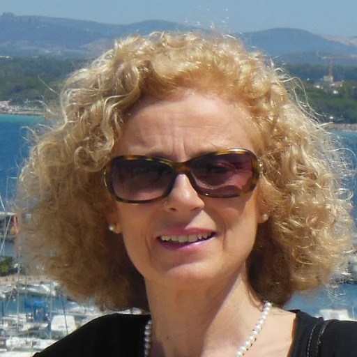

Robustness and Domain Shift
- Robustness under domain shift
- Staining, microscope, scanner, and illumination variability
- Lab and site variation
MICCAI 2026 Workshop: HemaRAI
A workshop on robust, fair, and clinically reliable AI for blood smear analysis
Red blood cell analysis and parasitemia detection are important tasks in clinical hematology and computational pathology. This workshop focuses on robust and trustworthy AI methods that can generalize across real-world domain shifts, support standardized evaluation, and accelerate clinically meaningful deployment.
Held in conjunction with MICCAI 2026. Exact workshop date and venue details are to be announced.
Call for Papers
We welcome submissions on robust RBC morphology analysis, parasitemia detection, foundation models, self-supervised learning, fairness and generalization, reproducibility and benchmark design, and clinically relevant hematology AI.
Submitted papers will undergo peer review, with selected contributions featured as oral presentations and posters.
Submissions are managed via OpenReview. Please use the link below to submit your paper.
About
A focused discussion space for rigorous methods, meaningful evaluation, and translational thinking across hematology images.
Why This Workshop
Performance on curated datasets is not enough. The field needs methods that remain dependable across clinical settings and deployment conditions.
Blood smear analysis is highly sensitive to acquisition and preparation variability, making robustness and calibration central technical challenges.
Better tools can support diagnosis, triage, and laboratory workflow only when they align with clinical needs and practical constraints.
Shared evaluation protocols and rigorous benchmarks are key to comparing methods fairly and moving the field forward credibly.
Program
A focused 120-minute format designed to balance invited context, selected research talks, and discussion.
Total duration: 120 minutes
Opening remarks and workshop framing.
Featured invited presentation.
Audience discussion following the invited talk.
Selected peer-reviewed contributions presented orally.
Short previews introducing poster contributions.
Interactive exchange around posters and emerging ideas.
Wrap-up, outlook, and community follow-up.
Speaker
The invited speaker is still being confirmed and will be announced once finalized.
TBD
Speaker details will be published here as soon as the invitation process is completed.
Organizers
The workshop is coordinated by an interdisciplinary team spanning academic research, translational AI, and biomedical image analysis.

General Chair
University of Cagliari

Program Chair · Webmaster
University of Cagliari

Clinical and Translational Advisor
PathOlOgics, LLC

Senior Advisory Chair
Helmholtz Munich

Program Chair
Helmholtz Munich

Webmaster
University of Cagliari

Keynote and Outreach Chair
University of Cagliari
Contact
For workshop-related inquiries, please contact the corresponding organizer.
Corresponding organizer
Dr. Andrea Loddo — andrea.loddo@unica.it
Webmasters: Luca Zedda, Davide Antonio Mura